Открываем VeraCrypt. Если его сейчас нет на системе, качаем последнюю обычную версию с официальной страницы загрузки и сначала устанавливаем его.
Создание
Открываем основное меню программы. И находим там под списком доступных томов кнопку "Создать том".
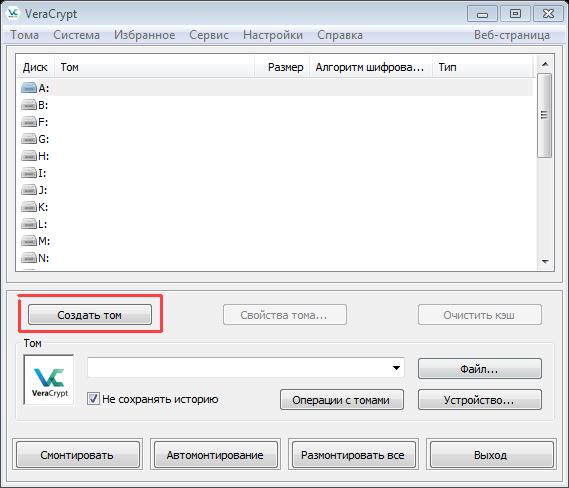
Размер криптоконтейнера необходимо предопределить заранее. Файл сразу создаётся указанного размера, поэтому ставить намного больше необходимого размера не надо.
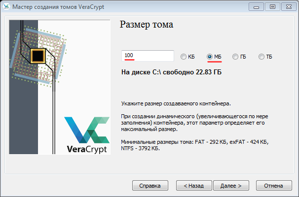
В типе указываем "Создать зашифрованный файловый контейнер".
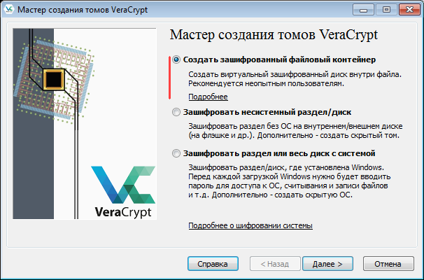
Тип тома - Обычный том VeraCrypt
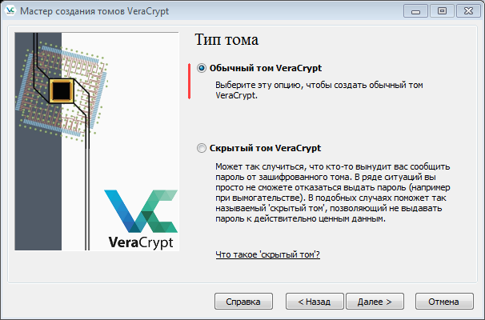
В размещении тома нажимаем кнопку "Файл" и указываем куда записать криптоконтейнер. Так же надо будет ввести его имя. Расширение можно поставить какое угодно. Поскольку в системе нет программ, которые могут самостоятельно поменять файл, контейнер ничего не сломает.
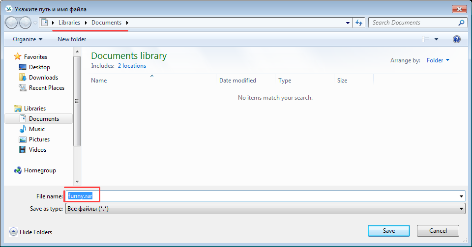
Алгоритм шифрования оставляем по умолчанию. AES + sha - быстрый и надёжной способ шифрования при достаточной длине пароля.
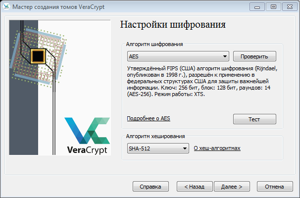
На следующем шаге вводим пароль, который будет использоваться для шифрования и расшифровки. Как альтернатива, можно использовать ключ-файл, но тогда придётся решить вопрос, как безопасно хранить его. Поэтому на первое время чтобы снизить риск потерять данные лучше использовать пароль
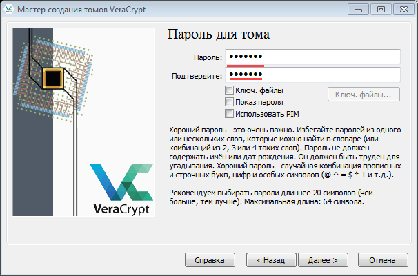
На этом этапе надо хаотично перемещать мышкой над окном программы пока индикатор внизу не станет зелёным.
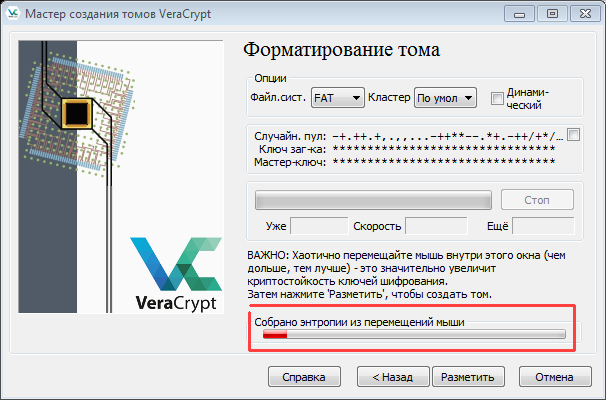
Это увеличивает энтропию ключа шифрования.
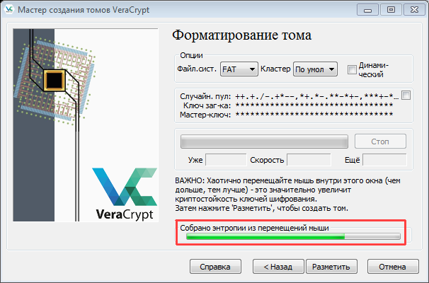
Контейнер готов. По пути, указанному вначале, появился новый файл заданного размера. Не смотря на то, что контейнер пустой, весь объём содержащего его файла заполнен не подлежащими расшифровке до ввода пароля данными. Узнать, что на самом деле есть в контейнере и есть ли там что-то можно лишь после монтирования.
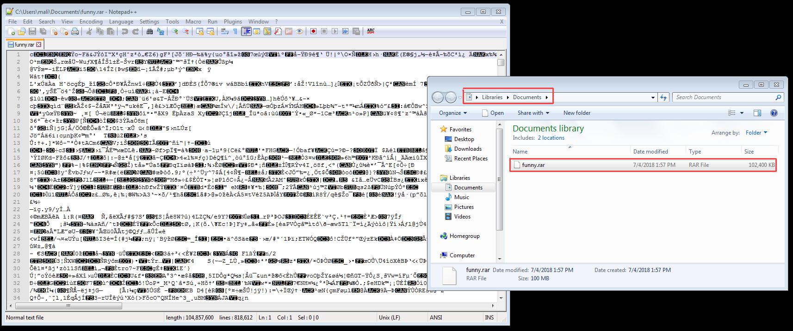
Монтирование
В начальном меню программы есть кнопка "Файл...". Нажав на неё надо выбрать файл созданного до этого контейнера. Затем из списка томов выше выбираем любой том, который не используется ещё в системе.
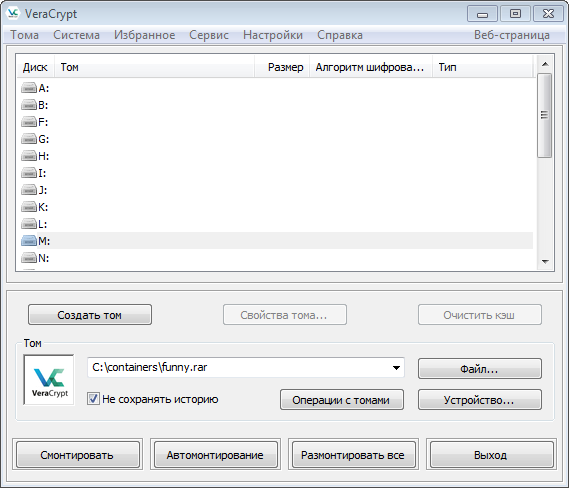
После чего нажимаем кнопку "Смонтировать" слева внизу.
После ввода пароля в следующим окне и нажатия кнопки ОК откройте проводник.
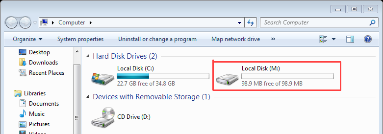
Там появится новый раздел с выбранной буквой и размером контейнера. Всё, что будет в него записано, будет зашифровано и сохранено в файл контейнера.
После окончания использования контейнер любой контейнер по отдельности или все сразу можно размонтировать - сделать содержимое контейнера опять недоступным до повторного ввода пароля. Это не обязательно, потому что все данные в контейнере обновляются на лету, а при выключении любым способом контейнеры автоматически демонтируются
Практическое задание:
Создайте контейнер небольшого размера с паролем "plastik", который будет содержать пустой текстовый файл(или можно положить всё, что угодно), упакуйте его в zip архив и приложите в качестве ответа для подтверждения прохождения практики.
Решено
выполнено